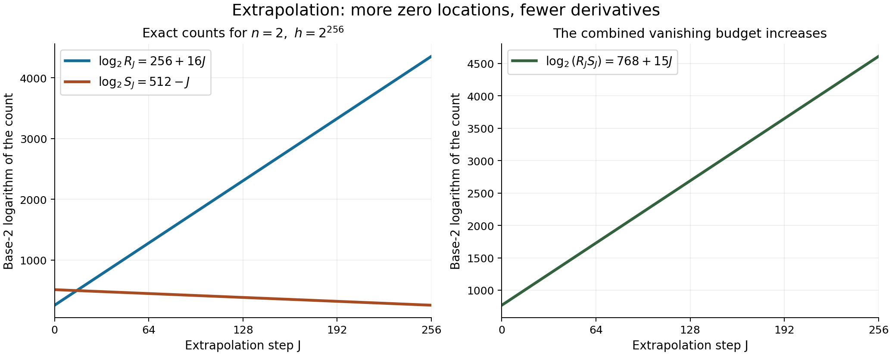

Baker's theorem II: extrapolation and the end of the proof
Draft. Public domain (CC0).
The preceding lesson produced a nonzero integer coefficient array. To finish the proof, we must recover one of those integers from analytic data and show that its absolute value is below \(1\). We begin by deriving that recovery problem. It determines how many small derivatives we need, why close frequencies matter, and how exact zeros must be extended before Cauchy's formula can help.
We use Propositions 2.2–2.3 from Baker's theorem I: building an auxiliary function and the height lower bound from Linear forms in logarithms: the problem, the trivial bounds, and effectivity. Baker's auxiliary-function and extrapolation method is explained in the freely accessible [Waldschmidt 2003] lectures; the coefficient selectors and all parameter comparisons used here are proved below. The analytic inputs are the maximum-modulus principle, Cauchy's formula and the chain rule.
After the proof, we examine how a logarithmic form arises from an arithmetic expression, and which hypothesis proves that it is nonzero. For the Dirichlet application, Abelian number fields and Dirichlet L-functions at \(s=1\), Theorem 17.3 and its imprimitive-character paragraph, proves \(L(1,\chi)\ne0\). A freely accessible proof at the same generality is [Sutherland 2021], Theorem 19.16, with its preceding class-number and cyclotomic arguments. The theorem, branches and proof methods retain the human attribution listed in the references.
1. Start with the integer that must be recovered
The contradiction will concern one coefficient, rather than a claim that an entire function with small derivatives must vanish. After restricting the function of the preceding lesson to the diagonal, relation (2.1) gives a finite sum
\[ \phi(z)=\sum_{i=1}^{R}\sum_{k=0}^{S-1}p_{k,i}z^ke^{\xi_i z}, \qquad R=(L+1)^n,\quad S=L+1. \]The coefficients are integers and at least one is nonzero. Rational independence of the original logarithms makes the frequencies distinct. We will justify their quantitative separation below.
For a polynomial \(W(z)=\sum_jw_jz^j\), differentiation at the origin gives
\[ \sum_jw_j\left.\frac{d^j}{dz^j}(z^ke^{\xi_i z})\right|_{z=0} =W^{(k)}(\xi_i). \]Indeed, for a monomial \(W(z)=z^j\), both sides are \((j)_k\xi_i^{j-k}\) if \(j\ge k\), and zero otherwise; linearity proves the identity. If \(W\) has one prescribed derivative equal to \(1\) and all the other derivatives through order \(S-1\) equal to zero at these nodes, then the left side recovers exactly one \(p_{k,i}\).
This tells us what the analytic part has to deliver. With \(N=RS\), it is enough to bound the first \(N\) derivatives by \(\varepsilon\), construct a selector of degree below \(N\) with coefficients at most \(M\), and arrange \(NM\varepsilon<1\). The nonzero recovered integer would then have absolute value below \(1\). The next two sections construct and bound the selector; Sections 4–6 produce the required derivatives.
A four-dimensional selector calculation
Take two nodes \(0,1\), each with two prescribed derivatives. For
\[ \psi(z)=p_{0,0}+p_{1,0}z+(p_{0,1}+p_{1,1}z)e^z, \]the polynomial \(W_0(z)=1-3z^2+2z^3\) has value \(1\) at \(0\), and has zero derivative there and zero value and derivative at \(1\). Therefore
\[ p_{0,0}=\psi(0)-3\psi''(0)+2\psi'''(0). \]Similarly \(W_1(z)=z-2z^2+z^3\) selects the first derivative at \(0\), giving
\[ p_{1,0}=\psi'(0)-2\psi''(0)+\psi'''(0). \]If \(p_{0,0}\) is a nonzero integer and these derivatives all have size below \(1/6\), the first identity is impossible. This is an example of the interpolation calculation itself; the general Baker proof uses its actual logarithmic nodes and the uniform selector bound below. In particular, it must be able to select whichever coefficient is nonzero.
2. Separate the frequencies
On the diagonal, relation (2.1) turns the auxiliary function into
\[ \phi(z)=\sum_{\lambda_1,\ldots,\lambda_n=0}^{L} \left(\sum_{s=0}^{L}p_{s,\lambda_1,\ldots,\lambda_n}z^s\right)e^{\xi_\lambda z}, \qquad \xi_\lambda=\sum_{j=1}^n\lambda_j\ell_j. \tag{3.11} \]Rational independence makes these \((L+1)^n\) frequencies distinct. For coefficient recovery, very close frequencies would make the interpolation coefficients too large. Elementary arithmetic gives the needed separation.
Lemma 3.3 (frequency separation). There is a constant \(c>1\), depending only on the fixed algebraic numbers and logarithms, such that, for every integer \(T\ge1\) and every nonzero integer vector \(t\) with \(|t_j|\le T\),
\[ \left|\sum_jt_j\ell_j\right|>c^{-T}. \tag{3.12} \]Proof. Put \(\Omega=\sum_jt_j\ell_j\ne0\) and \(P=e^\Omega\). If \(P=1\), then \(\Omega\) is a nonzero multiple of \(2\pi i\), so \(|\Omega|\ge2\pi\). This case must be kept: rational independence of arbitrary complex logarithms does not assert multiplicative independence of their bases.
If \(P\ne1\), Proposition 1.3 gives
\[ |P-1|\ge\exp\left(-D\log2-DT\sum_jh(\alpha_j)\right), \qquad D=[\mathbb Q(\alpha_1,\ldots,\alpha_n):\mathbb Q]. \]If \(|\Omega|\le1/2\), Lemma 1.1 gives \(|P-1|\le2|\Omega|\), hence \(|\Omega|\ge e^{-CT}\) for a fixed \(C>0\). If \(|\Omega|>1/2\), enlarge \(C\) to get the same conclusion. Choose \(c>e^C\) to make the inequality strict in every case. \(\square\)
For the frequencies in (3.11), define
\[ \sigma=\max(1,\max_\lambda|\xi_\lambda|),\qquad \rho=\min(1,\min_{\lambda\ne\mu}|\xi_\lambda-\xi_\mu|). \]Differences have integer coefficients bounded by \(L\), so \(\sigma\le C_4(L+1)\) and \(\rho>c^{-L}\). This exponentially small separation is sufficient.
3. Build and bound the coefficient selector
Lemma 3.4 (Hermite selector). Let \(\xi_1,\ldots,\xi_R\) be distinct complex numbers, \(S\ge1\), and define
\[ \sigma=\max(1,|\xi_1|,\ldots,|\xi_R|),\qquad \rho=\min(1,\min_{i\ne j}|\xi_i-\xi_j|). \]For \(R=1\), set \(\rho=1\). Given \(1\le t\le R\), \(0\le s<S\), there is a polynomial \(W(z)=\sum_{j=0}^{RS-1}w_jz^j\) with
\[ W^{(k)}(\xi_i)=\begin{cases}1,&(i,k)=(t,s),\\0,&\text{otherwise},\end{cases} \quad 1\le i\le R,\quad 0\le k<S, \]and
\[ |w_j|\le(8\sigma/\rho)^{RS}. \tag{3.13} \]Proof. For \(R\ge2\), put \(V(z)=\prod_{i\ne t}(z-\xi_i)^S\), \(M=(R-1)S\), and expand
\[ \frac1{V(\xi_t+x)}=\sum_{j\ge0}c_jx^j. \]Define
\[ W(z)=\frac{(z-\xi_t)^s}{s!}\,V(z) \sum_{j=0}^{S-1-s}c_j(z-\xi_t)^j. \tag{3.14} \]Its degree is at most \(M+s+S-1-s=RS-1\). The factor \(V\) forces order \(S\) at every other node. At \(\xi_t\), reciprocal truncation gives \(W(\xi_t+x)=x^s/s!+O(x^S)\), proving the prescribed derivatives.
For the size bound, regard \(V(\xi_t+x)\) as a product of \(M\) linear factors, counting repetitions. Each constant term has size at least \(\rho\). Multiplying their reciprocal geometric series gives
\[ |c_j|\le\binom{M+j-1}{j}\rho^{-(M+j)}. \]For \(j\le S-1-s\), \(M+j<RS\), and \(\binom{M+j-1}{j}\le2^{M+j}\). Thus \(|c_j|\le(2/\rho)^{RS}\). The sum of absolute values of the coefficients of \(V(z)(z-\xi_t)^{s+j}\) is at most
\[ \prod_{i\ne t}(1+|\xi_i|)^S(1+|\xi_t|)^{s+j}\le(2\sigma)^{RS}. \]There are at most \(S\) terms in (3.14), and \(1/s!\le1\). Every coefficient is therefore at most \(S(4\sigma/\rho)^{RS}\). Since \(S\le2^{RS}\), this implies (3.13). For \(R=1\), take \(W(z)=(z-\xi_1)^s/s!\); its coefficient sum is at most \((2\sigma)^S\), also within the stated bound. \(\square\)
The normalization matters. A polynomial equal to \((z-\xi_t)^s\) to order \(S\) would select \(s!\) times the desired coefficient. The factor \(1/s!\) selects the coefficient itself.
4. The family on which zeros can be transferred
Suppose that the algebraic logarithms \(\ell_1,\ldots,\ell_n\) are rationally independent but that \(1,\ell_1,\ldots,\ell_n\) satisfy an algebraic-coefficient relation. Use the normalization and the function \(\Phi\) of the preceding lesson. Put
\[ a=\frac1{8n},\qquad L=\lfloor h^{2-2a}\rfloor,\qquad f_m(z)=\partial^m\Phi(z,\ldots,z). \]For all sufficiently large integers \(h\), its integer coefficients \(p_\lambda\), not all zero, satisfy \(|p_\lambda|\le e^{h^3}\). We have
\[ f_m(l)=0\quad(1\le l\le h,\ |m|\le h^2), \tag{3.1} \]and, for every \(|m|\le h^2\),
\[ |f_m(z)|\le e^{C_2(h^3+L|z|)}. \tag{3.2} \]At every positive integer \(l\), either \(f_m(l)=0\) or
\[ |f_m(l)|\ge e^{-C_3(h^3+Ll)}. \tag{3.3} \]The same \(C_2,C_3\) work for every permitted derivative. They depend on the fixed algebraic relation and its logarithms, but never on \(h,m,l,z\). This uniformity permits a finite sequence of extrapolations.
When differentiating along the diagonal, we use
\[ \frac{d^k}{dz^k}f_m(z) =\sum_{j_0+\cdots+j_{n-1}=k} \frac{k!}{j_0!\cdots j_{n-1}!}\,\partial^{m+j}\Phi(z,\ldots,z). \tag{3.4} \]This is the repeated chain rule for the operator \(\partial_{z_0}+\cdots+\partial_{z_{n-1}}\). Thus vanishing of multivariable derivatives through total order \(S\) implies that \(f_m\) has a zero of order at least \(S-|m|+1\) at the same diagonal point.
The exact-zero transfer contract
The analytic and arithmetic estimates can be compared before choosing Baker's particular powers of \(h\). The following elementary statement identifies the quantity that an extrapolation step needs to make positive.
Lemma (one extrapolation step). Let \(R,S,Q\) be positive integers with \(Q\ge R\). Let \(f\) be entire and have a zero of order at least \(S\) at every integer \(1,\ldots,R\). Suppose that, for nonnegative constants \(U,V,A,B\),
\[ |f(z)|\le e^{U+V|z|}, \]and at each integer \(1\le l\le Q\) either \(f(l)=0\) or \(|f(l)|\ge e^{-A-Bl}\). If a radius \(\mathcal R>Q\) satisfies
\[ RS\log\frac{\mathcal R-R}{Q} >U+V\mathcal R+A+BQ, \]then \(f(l)=0\) for every integer \(1\le l\le Q\).
Proof. Put \(F(z)=\prod_{r=1}^{R}(z-r)^S\). The quotient \(f/F\) is entire because the prescribed zeros remove its apparent poles. On \(|z|=\mathcal R\), we have \(|F(z)|\ge(\mathcal R-R)^{RS}\). For a new integer \(R<l\le Q\), we have \(|F(l)|\le Q^{RS}\). The maximum-modulus principle consequently gives
\[ \log|f(l)|\le U+V\mathcal R -RS\log\frac{\mathcal R-R}{Q} <-A-BQ\le-A-Bl \]if \(f(l)\ne0\). This contradicts the arithmetic lower bound. The old integers already have zero values by hypothesis. \(\square\)
The factor \(RS\) measures how many exact zeros, counted with multiplicity, are available for division. The logarithm measures the gain from comparing the outer circle with the new interval. The two growth budgets on the right measure what that gain must defeat. Small initial values would not give an entire quotient, so they cannot replace the exact-zero hypothesis.
For the family \(f_m\), the chain rule (3.4) supplies the multiplicity. We keep derivative indices through \(S_{J+1}\) and spend another \(S_{J+1}\) orders on division. Thus \(2S_{J+1}\le S_J\) is a sufficient budget rule. In the next proposition use
\[ \begin{gathered} R=R_J,\quad S=S_{J+1},\quad Q=R_{J+1},\quad \mathcal R=R_{J+1}h^a,\\ U=C_2h^3,\quad V=C_2L,\quad A=C_3h^3,\quad B=C_3L. \end{gathered} \]The computations (3.7)–(3.8) verify this contract simultaneously for the fixed number of steps. They are what makes the particular schedule work; the schedule alone is not a proof that new zeros appear.
5. Verify the transfer schedule
Define, for \(0\le J\le J_*=(8n)^2\),
\[ R_J=\left\lfloor h^{1+Ja}\right\rfloor,\qquad S_J=\left\lfloor\frac{h^2}{2^J}\right\rfloor. \]The number of points grows, while the derivative budget is halved at each step. The number of steps is fixed once \(n\) is fixed. We may therefore choose \(h\) large enough for every estimate at every step simultaneously.
Proposition 3.1 (extrapolation). For all sufficiently large integers \(h\),
\[ \partial^m\Phi(l,\ldots,l)=0 \quad(1\le l\le R_J,\ |m|\le S_J,\ 0\le J\le J_*). \tag{3.5} \]Proof. The case \(J=0\) is (3.1). Suppose the assertion holds at \(J<J_*\), and fix \(|m|\le S_{J+1}\). Formula (3.4) shows that the derivatives of \(f_m\) of orders \(0,\ldots,S_{J+1}-1\) vanish at \(1,\ldots,R_J\). Their total multivariable orders are at most
\[ |m|+S_{J+1}-1<2S_{J+1}\le S_J; \]the last inequality follows from \(2\lfloor x/2\rfloor\le\lfloor x\rfloor\). Consequently
\[ F(z)=\prod_{r=1}^{R_J}(z-r)^{S_{J+1}} \]divides \(f_m\) as an entire function: all apparent poles of \(f_m/F\) are removable.
Take the circle of radius \(\mathcal R=R_{J+1}h^a\). For sufficiently large \(h\), \(h^a\ge2\), so \(\mathcal R-R_J\ge\mathcal R/2\). On the circle,
\[ |F(z)|\ge(\mathcal R/2)^{R_JS_{J+1}}. \]At a new integer \(R_J<l\le R_{J+1}\), every \(|l-r|\le R_{J+1}\), so \(|F(l)|\le R_{J+1}^{R_JS_{J+1}}\). Apply the maximum-modulus principle to \(f_m/F\), and use (3.2). If \(f_m(l)\ne0\), then
\[ \log|f_m(l)|\le C_2(h^3+L\mathcal R) -R_JS_{J+1}(a\log h-\log2). \tag{3.6} \]We check the powers explicitly. Once the quantities being rounded are at least \(2\),
\[ R_JS_{J+1}\ge\frac{h^{3+Ja}}{2^{J+3}},\qquad L\mathcal R\le h^{2-2a}h^{1+(J+1)a}h^a=h^{3+Ja}. \]Also \(h^3\le h^{3+Ja}\), hence
\[ h^3+L\mathcal R\le 2^{J+4}R_JS_{J+1}. \tag{3.7} \]The arithmetic alternative (3.3) would require
\[ \log|f_m(l)|\ge-C_3(h^3+Ll)\ge-C_3(h^3+L\mathcal R). \]This contradicts (3.6)–(3.7) whenever
\[ a\log h-\log2>(C_2+C_3)2^{J+4}. \tag{3.8} \]There are only \(J_*\) induction steps. Choose \(h\) so that all the rounding bounds and (3.8) hold for every \(J<J_*\). Every new integer value is then zero; the old ones vanish by the induction hypothesis. This proves (3.5). \(\square\)
The proof uses exact zeros twice. Multiplicity allows division by \(F\); arithmetic converts the resulting small values into new exact zeros. Merely small initial derivatives would not justify the same division.

Figure 1. Exact parameter counts for \(n=2\), \(h=2^{256}\) and \(0\le J\le256\): \(\log_2 R_J=256+16J\), \(\log_2 S_J=512-J\), and \(\log_2(R_JS_J)=768+15J\). This displays the growth mechanism of Proposition 3.1. These values illustrate the counts; they are not a universal threshold for \(C_2,C_3\). The reproducible source accompanies the lesson.
6. Reach the derivative budget for coefficient recovery
Write
\[ \phi(z)=\Phi(z,\ldots,z),\qquad X=h^{8n},\qquad Y=\left\lfloor\frac{h^2}{2^{J_*}}\right\rfloor. \]Since \(R_{J_*}=h^{1+8n}\ge X\), Proposition 3.1 and (3.4) show that \(\phi\) vanishes to order at least \(Y\) at each integer \(1,\ldots,X\). Here \(X\) is an integer. The fixed factor \(2^{J_*}\) may be enormous, but \(Y\to\infty\) as \(h\to\infty\).
Proposition 3.2 (derivatives at the origin). For all sufficiently large integers \(h\),
\[ |\phi^{(j)}(0)|<e^{-h^{8n}}\qquad(0\le j\le h^{8n}). \tag{3.9} \]Proof. Set \(E(z)=\prod_{r=1}^{X}(z-r)^Y\) and \(\mathcal R=Xh^a\). The quotient \(\phi/E\) is entire. On \(|z|=\mathcal R\), \(|E(z)|\ge(\mathcal R/2)^{XY}\) for large \(h\). On \(|w|\le1\), \(|E(w)|\le(2X)^{XY}\). The growth bound and maximum-modulus principle give
\[ \sup_{|w|\le1}|\phi(w)|\le \exp\!\left(C_2(h^3+L\mathcal R)-XY(a\log h-\log4)\right). \tag{3.10} \]For large \(h\), \(Y\ge h^2/2^{J_*+1}\), and therefore
\[ \frac{L\mathcal R}{XY}\le 2^{J_*+1}h^{-a}\longrightarrow0,\qquad \frac{h^3}{XY}\le2^{J_*+1}h^{1-8n}\longrightarrow0. \]The positive term in (3.10), divided by \(XY\), tends to zero, whereas \(a\log h-\log4\) tends to infinity. Thus the supremum is at most \(e^{-XY}\) eventually. Cauchy's formula on the unit circle yields \(|\phi^{(j)}(0)|\le j!e^{-XY}\). For \(j\le X\), \(\log(j!)\le X\log X\). Since \(Y>\log X+1\) eventually, this is strictly less than \(e^{-X}\), proving (3.9). \(\square\)
Small derivatives alone do not imply that an entire function is zero. The number of frequencies and the degree of its polynomial coefficients must now enter the argument.
7. Recover the integer and conclude
Set \(S=L+1\), \(R=(L+1)^n\) and \(N=RS=(L+1)^{n+1}\). Choose a nonzero integer coefficient \(p_{s,t}\) in (3.11), and let \(W\) be its selector. For \(s\ge0\),
\[ \left.\frac{d^j}{dz^j}(z^se^{\xi z})\right|_{z=0} =\frac{d^s}{d\xi^s}\xi^j. \]Both sides are zero for \(j<s\), and otherwise equal \((j)_s\xi^{j-s}\). Multiply by \(w_j\) and sum. The selector conditions give the exact coefficient identity
\[ \sum_{j=0}^{N-1}w_j\phi^{(j)}(0) =\sum_{i=1}^R\sum_{k=0}^{S-1}p_{k,i}W^{(k)}(\xi_i) =p_{s,t}. \tag{3.15} \]All needed derivative orders fit inside Proposition 3.2, since
\[ N\le2^{n+1}h^{2n+2}=o(h^{8n})\qquad(n\ge1). \]The frequency bounds and (3.13) yield
\[ \log\max_j|w_j| \le N\bigl(\log(8C_4(L+1))+L\log c\bigr)\le C_5h^{2n+4} \]for large \(h\). In particular \(2n+4<8n\), even for \(n=1\). Combining (3.9) and (3.15) gives
\[ 1\le|p_{s,t}|\le N\exp(C_5h^{2n+4}-h^{8n})<1 \]eventually. The first inequality holds because the selected coefficient is a nonzero integer. This contradiction rules out the original relation.
We have proved Baker's theorem: arbitrary rationally independent logarithms of nonzero algebraic numbers remain linearly independent over \(\overline{\mathbb Q}\) after adjoining \(1\). The proof does not require multiplicative independence, positive bases, or principal branches.
8. Additive forms: find the source of nonvanishing
The theorem about independent logarithms gives an especially useful rule for arbitrary, possibly dependent logarithms: first reduce to a rational basis, then ask whether the resulting form is zero. The zero case must be handled by the application, because Baker's theorem permits it.
Corollary 3.5. For nonzero algebraic \(\alpha_j\), chosen logarithms \(\ell_j\), and algebraic \(\beta_j\), the homogeneous form \(H=\sum_j\beta_j\ell_j\) is either zero or transcendental.
Proof. Select a rational basis \(\kappa_1,\ldots,\kappa_r\) from the logarithms spanning them, and rewrite \(H=\sum_k\eta_k\kappa_k\), with algebraic \(\eta_k\). A nonzero algebraic \(H\) would give the nontrivial relation \(-H+\sum_k\eta_k\kappa_k=0\), contradicting independence of \(1,\kappa_1,\ldots,\kappa_r\). If the span is zero, \(H=0\) directly. \(\square\)
Thus \(\beta_0+H\), with algebraic \(\beta_0\), is transcendental whenever \(H\ne0\); if \(H=0\), its value is the algebraic number \(\beta_0\). Nonvanishing of the entire inhomogeneous expression is insufficient: \(\beta_0=1\) with all logarithmic coefficients zero gives \(1\). This qualification belongs in the statement.
Dirichlet \(L\)-values as logarithmic forms
Let \(\chi\) be a nonprincipal Dirichlet character modulo \(q>1\), extended by zero off the units. Put \(\zeta=e^{2\pi i/q}\) and
\[ \widehat\chi(m)=\frac1q\sum_{r=1}^q\chi(r)\zeta^{-mr}\quad(0\le m<q). \]Character values are zero or roots of unity, so these coefficients are algebraic. Multiplication of the residues by a unit on which \(\chi\ne1\) proves that its period sum is zero, hence \(\widehat\chi(0)=0\). Finite geometric sums give Fourier inversion:
\[ \chi(n)=\sum_{m=1}^{q-1}\widehat\chi(m)\zeta^{mn}. \tag{3.16} \]The partial sums of \(\chi(n)\) are bounded by periodicity and the zero period sum. Summation by parts therefore proves convergence of \(\sum_{n\ge1}\chi(n)/n\). To justify the logarithmic identity, first insert \(0<t<1\). Absolute convergence and (3.16) give
\[ \sum_{n\ge1}\frac{\chi(n)t^n}{n} =-\sum_{m=1}^{q-1}\widehat\chi(m)\operatorname{Log}(1-t\zeta^m). \tag{3.17} \]The power series for \(-\operatorname{Log}(1-z)\) follows by integrating the geometric series. The path \(1-t\zeta^m\) stays in the right half-plane, so its logarithm is principal.
We also supply the limiting argument. If \(\sum a_n=S\) converges and \(A_N=\sum_{n\le N}a_n\), summation by parts gives
\[ \sum_{n\ge1}a_nt^n=(1-t)\sum_{N\ge1}A_Nt^N\longrightarrow S\quad(t\uparrow1). \]Replace \(A_N\) by \(S+(A_N-S)\). The constant part tends to \(S\). Any fixed initial error segment tends to zero, while its tail is bounded by \(\sup_{N\ge N_0}|A_N-S|\). Apply this to \(a_n=\chi(n)/n\). For \(1\le m<q\), \(1-\zeta^m\ne0\) has positive real part, so (3.17) tends to
\[ L(1,\chi)=-\sum_{m=1}^{q-1}\widehat\chi(m)\operatorname{Log}(1-\zeta^m). \tag{3.18} \]Theorem 17.3 of the internal Number fields lesson cited in the introduction proves nonvanishing for primitive nontrivial characters. Its following paragraph covers imprimitive characters by the nonzero Euler factors \(1-\chi^*(p)/p\). Thus (3.18) is a nonzero homogeneous algebraic-coefficient logarithmic form. Corollary 3.5 proves:
Theorem 3.9. For every nonprincipal Dirichlet character modulo \(q>1\), \(L(1,\chi)\) is transcendental.
For \(\chi_4\), whose values at \(1,3\pmod4\) are \(1,-1\), the only nonzero Fourier coefficients are \(\widehat\chi_4(1)=-i/2\), \(\widehat\chi_4(3)=i/2\). Hence
\[ L(1,\chi_4)=\frac i2\bigl(\operatorname{Log}(1-i)-\operatorname{Log}(1+i)\bigr)=\frac\pi4. \]The real parts cancel; the arguments are \(-\pi/4\) and \(\pi/4\). This checks the Fourier sign and the branch convention.
A modulus and its induced character
The Fourier identity also shows why one must preserve the nonvanishing input when passing to an imprimitive modulus. Let \(\chi_3(1)=1\), \(\chi_3(2)=-1\), extended periodically and by zero at multiples of \(3\). Its Fourier coefficients at \(m=1,2\) are \(-i/\sqrt3,i/\sqrt3\). If \(\zeta=e^{2\pi i/3}\), then
\[ L(1,\chi_3)=\frac{i}{\sqrt3} \bigl(\operatorname{Log}(1-\zeta)-\operatorname{Log}(1-\zeta^2)\bigr). \]The two arguments are \(-\pi/6\) and \(\pi/6\), and both moduli equal \(\sqrt3\). The real parts cancel, so \(L(1,\chi_3)=\pi/(3\sqrt3)\). This value is nonzero; it checks both the Fourier sign and the selected logarithmic branches.
Now let \(\chi_6\) be the character modulo \(6\) induced by \(\chi_3\). The terms removed from the \(\chi_3\)-series are exactly the even ones. For their convergent sum,
\[ \sum_{k\ge1}\frac{\chi_3(2k)}{2k} =-\frac12L(1,\chi_3). \]Consequently \(L(1,\chi_6)=\tfrac32L(1,\chi_3)=\pi/(2\sqrt3)\). This is the Euler factor \(1-\chi_3(2)/2\) in a concrete instance. The general nonvanishing theorem, rather than this example, supplies the corresponding conclusion at every nonprincipal modulus.
9. Products and branch tests
A product of powers requires a different check from an additive form: an assumed algebraic product supplies one more algebraic base, whose logarithm can be chosen to be the entire exponent. There is no need to replace each original branch by a principal branch. Two hypotheses make this procedure useful: independence of the exponents, or a nonzero algebraic exponential factor. We treat those mechanisms separately.
Independent exponents
Corollary 3.7. Suppose all \(\alpha_j\) are algebraic and different from \(0,1\), and \(1,\beta_1,\ldots,\beta_n\) are rationally independent algebraic numbers. Then every chosen value of \(\prod_j\alpha_j^{\beta_j}\) is transcendental.
Proof. If its value \(\gamma\) were algebraic, choose \(\ell_\gamma=\sum_j\beta_j\ell_j\). Select a rational basis \(\kappa_k\) of the span of all these logarithms, and write
\[ \ell_\gamma=\sum_kr_{0k}\kappa_k,\qquad \ell_j=\sum_kr_{jk}\kappa_k,\qquad r_{jk}\in\mathbb Q. \]Baker's theorem implies \(r_{0k}-\sum_j\beta_jr_{jk}=0\) for every \(k\). Independence of \(1,\beta_1,\ldots,\beta_n\) forces all \(r_{jk}\), including \(r_{0k}\), to vanish. All \(\ell_j\) would be zero, impossible since \(\alpha_j\ne1\). This also covers \(\gamma=1\). \(\square\)
For example, \(2^{\sqrt2}3^{\sqrt3}\) is transcendental. If \(a+b\sqrt2+c\sqrt3=0\) with rational coefficients and \(c\ne0\), squaring gives \(ab=0\); the resulting possibilities would make \(\sqrt3\) or \(\sqrt{3/2}\) rational unless all coefficients vanish. Both are irrational by prime factorization. If \(c=0\), irrationality of \(\sqrt2\) finishes the check.
A nonzero algebraic exponential factor
Corollary 3.6. If \(\beta_0\ne0\) is algebraic, every \(\alpha_j\ne0\) and \(\beta_j\) is algebraic, and powers are defined by chosen logarithms, then
\[ e^{\beta_0}\alpha_1^{\beta_1}\cdots\alpha_n^{\beta_n} \]is transcendental.
Proof. If its value were algebraic \(\gamma\), choose the logarithm \(\ell_\gamma=\beta_0+\sum_j\beta_j\ell_j\). Then \(\ell_\gamma-\sum_j\beta_j\ell_j=\beta_0\) is a nonzero algebraic homogeneous form in logarithms of algebraic numbers, contradicting Corollary 3.5. This chosen logarithm handles the branches without a suppressed period term. \(\square\)
Keeping a period in the nonvanishing test
Corollary 3.8. For every algebraic \(\alpha\ne0\), every value of \(\pi+\log\alpha\) is transcendental. If \(u,v\) are algebraic and \(v\ne0\), then \(e^{u\pi+v}\) is transcendental.
Proof. Take \(\log(-1)=i\pi\), so \(\pi+\ell_\alpha=\ell_\alpha-i\log(-1)\). This form is nonzero. Otherwise \(\ell_\alpha=-\pi\), and the nonzero real number \(-\pi\) and imaginary number \(i\pi\) would be rationally independent logarithms of algebraic numbers satisfying the displayed algebraic relation, contrary to Baker's theorem. Apply Corollary 3.5. For the second assertion, write \(e^{u\pi+v}=e^v(-1)^{-iu}\) and apply Corollary 3.6. \(\square\)
Here are two boundary checks for the product criteria. First,
\[ 2^{\sqrt2}4^{-\sqrt2/2}=1 \]for the real logarithms. The exponents together with \(1\) are rationally dependent, so Corollary 3.7 does not apply. Second, setting \(\beta_0=0\) in Corollary 3.6 would allow the same value \(1\); its nonzero-constant hypothesis is necessary for that conclusion. These checks explain the conditions without imposing multiplicative independence on the bases. The Gelfond–Schneider deduction in the preceding lesson is now unconditional.
10. Exercises
Exercise 1 (easy). Prove Corollary 3.8 for arbitrary chosen logarithms, including \(\alpha=1\). Explain why adding an algebraic constant to a homogeneous form requires a condition on its logarithmic part.
Exercise 2 (medium). Prove Lemma 3.3 by a norm argument. According to the sign of \(t_j\), choose the positive leading coefficient \(a_j\) of the primitive minimal polynomial of \(\alpha_j\) or \(\alpha_j^{-1}\), and use
\[ w=\left(\prod_ja_j^{|t_j|}\right)\left(\prod_j\alpha_j^{t_j}-1\right). \]Explain separately the case \(w=0\) and the role of rational independence there.
Exercise 3 (medium). Put \(U(z)=\prod_i(z-\xi_i)^S\), and let \(C_t\) be a small positively oriented circle around \(\xi_t\) containing no other node. Show that, for \(z\) outside the circle,
\[ W(z)=\frac{U(z)}{s!\,2\pi i}\int_{C_t} \frac{(\zeta-\xi_t)^s}{(z-\zeta)U(\zeta)}\,d\zeta \]equals (3.14). Deduce its jets and bound (3.13).
Exercise 4 (medium). Prove (3.18), including convergence, branch choice and nonvanishing for an imprimitive nonprincipal character. Compute the Fourier coefficients for \(\chi_4\).
Exercise 5 (hard). Prove Corollary 3.7 by induction. First prove that \(\sum_j\beta_j\ell_j\ne0\) if the algebraic \(\beta_j\) are rationally independent and all \(\alpha_j\ne0,1\). Handle explicitly an assumed algebraic product value equal to \(1\).
Exercise 6 (hard). Check every power and rounding bound in Propositions 3.1–3.2. Explain why \(J_*\) does not prevent \(Y\to\infty\), and why coefficient recovery works for \(n=1\).
11. Solutions
Solution 1. The expression \(\ell_\alpha-i\log(-1)\) is homogeneous. If zero, its two logarithms would be \(-\pi\) and \(i\pi\), which are rationally independent, contradicting Baker's theorem. Corollary 3.5 makes its nonzero value transcendental. For \(\alpha=1\), a chosen logarithm is \(2\pi ik\), giving \((1+2ik)\pi\ne0\), consistent with the proof. If \(H\ne0\), an algebraic \(\beta_0+H\) would make \(H\) algebraic after subtraction. If \(H=0\), its value is simply \(\beta_0\). The exponential assertion follows from \(u\pi=-iu\log(-1)\) and the nonzero constant \(v\).
Solution 2. If \(a\eta^d+A_1\eta^{d-1}+\cdots+A_d=0\), then \(a\eta\) satisfies the monic integer polynomial \[ X^d+A_1X^{d-1}+aA_2X^{d-2}+\cdots+a^{d-1}A_d. \] Thus every \(a_j\alpha_j^{\operatorname{sgn}(t_j)}\), and therefore \(w\), is an algebraic integer. Omit indices with \(t_j=0\). Each conjugate of \(w\) has size at most \(e^{CT}\), because the conjugates of the fixed bases and inverses form a finite list. If \(w\ne0\), its integer norm gives \(|w|\ge e^{-C(D-1)T}\). Dividing by \(\prod a_j^{|t_j|}\le e^{C'T}\) bounds \(|P-1|\) below by \(e^{-C''T}\). If \(|\Omega|\le1/2\), use \(|P-1|\le2|\Omega|\); otherwise \(|\Omega|>1/2\) already suffices. If \(w=0\), \(P=1\) and \(\Omega\in2\pi i\mathbb Z\). Independence and \(t\ne0\) exclude zero, leaving \(|\Omega|\ge2\pi\). Without independence this last exclusion would fail.
Solution 3. Write \(x=\zeta-\xi_t\), \(U(\zeta)=x^SV(\xi_t+x)\), and expand \(1/V(\xi_t+x)=\sum c_jx^j\). On a sufficiently small circle, \[ \frac1{z-\zeta}=\sum_{k\ge0}\frac{x^k}{(z-\xi_t)^{k+1}}. \] The integral selects the coefficient of \(x^{-1}\), giving \[ \frac{U(z)}{s!}\sum_{j=0}^{S-1-s} \frac{c_j}{(z-\xi_t)^{S-s-j}} =\frac{V(z)}{s!}\sum_{j=0}^{S-1-s}c_j(z-\xi_t)^{s+j}. \] This is (3.14) and extends polynomially across all nodes. Its jets follow from the factors and reciprocal truncation. The coefficient estimate follows from \(|c_j|\le\binom{M+j-1}{j}\rho^{-(M+j)}\) and the polynomial coefficient sums in Lemma 3.4. For \(R=1\), the integral gives \((z-\xi_1)^s/s!\) directly.
Solution 4. The zero period sum bounds partial sums of \(\chi\); summation by parts gives convergence. Fourier inversion, inserted into the absolutely convergent \(t\)-series, gives (3.17). The Abel limit proved in Section 8 gives (3.18). The path is in the right half-plane, hence the limiting logarithm is principal. The written internal nonvanishing theorem covers \(\chi^*\), and the extra factors \(1-\chi^*(p)/p\) for an imprimitive modulus cannot vanish since \(|\chi^*(p)|\le1<p\). At modulus \(4\), the Fourier sum gives \(-i/2,0,i/2\) at \(m=1,2,3\); substitution gives \(\pi/4\).
Solution 5. Induct on \(n\) for the auxiliary assertion. For \(n=1\), both factors are nonzero. If the logarithms are rationally independent, Baker's theorem applies. Otherwise take a nontrivial rational relation \(\sum_jr_j\ell_j=0\), with \(r_n\ne0\), and eliminate \(\ell_n\). The shortened coefficients are \(\beta'_j=\beta_j-(r_j/r_n)\beta_n\), \(j<n\). They remain rationally independent: a relation among them rearranges to one among the original \(\beta_j\), forcing all its coefficients to vanish. The induction hypothesis rules out zero for the shortened form.
Now assume the product has algebraic value \(\gamma\). If \(\gamma\ne1\), choose \(\ell_\gamma=\sum_j\beta_j\ell_j\). Apply the auxiliary assertion to the bases \(\alpha_1,\ldots,\alpha_n,\gamma\) and the independent coefficients \(\beta_1,\ldots,\beta_n,-1\), contradicting the resulting zero form. If \(\gamma=1\), the original form is \(2\pi ik\). For \(k=0\), the original auxiliary assertion is contradicted. For \(k\ne0\), adjoin the base \(-1\) with logarithm \(i\pi\). The coefficients \(\beta_1,\ldots,\beta_n,-2k\) are independent because \(1,\beta_1,\ldots,\beta_n\) are. The resulting form is zero, again impossible.
Solution 6. Each sufficiently large rounded quantity is at least half its unrounded value, giving \(R_JS_{J+1}\ge h^{3+Ja}/2^{J+3}\). Also \(L\le h^{2-2a}\), \(\mathcal R\le h^{1+(J+2)a}\), hence \(L\mathcal R\le h^{3+Ja}\), proving (3.7). A single \(h\) meets (3.8) for the finite set of \(J\). Finally \(Y\ge h^2/2^{J_*+1}\), so \(L\mathcal R/(XY)\le2^{J_*+1}h^{-a}\to0\), \(h^3/(XY)\to0\), and \(Y>\log X+1\) eventually. The denominator \(2^{J_*}\) is fixed. For coefficient recovery, \(N=O(h^{2n+2})\) and \(\log|w_j|=O(h^{2n+4})\); at \(n=1\), the exponents are \(4,6,8\), so both comparisons with \(h^{8n}\) remain strict.
Prerequisites and continuation
The height and Siegel-lemma dependencies are the exact written internal lessons specified in the first two lessons. The integral-basis and norm prerequisites are written in Number fields. The proofs here complete Baker's theorem across the auxiliary-function and extrapolation lessons, including separation and Hermite interpolation. The \(L\)-value application uses the written internal nonvanishing theorem at the exact generality specified above. The next lessons keep quantitative track of the algebraic data to obtain effective lower bounds.
References
- [Waldschmidt 2003] Michel Waldschmidt, “Linear Independence Measures for Logarithms of Algebraic Numbers,” in Diophantine Approximation, Lecture Notes in Mathematics 1819, Springer, 2003, 249–344. Author's full text. Explains the normalized derivations, auxiliary-function construction and repeated extrapolation, including the algebraic constant and arbitrary logarithmic branches.
- [Waldschmidt 2000] Michel Waldschmidt, Diophantine Approximation on Linear Algebraic Groups, Springer, 2000. Author's full text. Contains the height and pigeonhole arguments used by the construction, and complete proofs of the homogeneous and nonhomogeneous theorems.
- [Sutherland 2021] Andrew V. Sutherland, Number Theory I, MIT OpenCourseWare, Fall 2021. Dirichlet \(L\)-functions and the analytic class number formula and nonvanishing. These lecture notes are credited to Sutherland and MIT; their own licence applies.
- [Serre 1969/1971] Jean-Pierre Serre, “Travaux de Baker,” Séminaire Bourbaki, exposé 368, 73–86. Full text at Numdam. Historical account of Baker's methods and transcendence consequences.